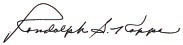

Trade Development Bank of Mongolia
Randolph Koppa
Executive Vice Chairman
Dear customers, partners, ladies and gentlemen,
I am honored to present you the Bank’s main accomplishments and financial results achieved in 2013, a period of rapid growth in Mongolian economy, whilst the world economic growth and especially the Chinese economic growth rate is declining over the past years. As presented in this report, the bank had record earnings and regained its position as the largest bank in Mongolia in terms of assets.
Trade and Development Bank of Mongolia, the leading bank in the Mongolian banking sector,cooperated with Netherlands Development bank (FMO) and ING Bank to obtain a USD 82 million syndicated A/B term loan facility agreement in September 2013, to provide funding for the bank’s lending activities, in particular to encourage more lending to SMEs. . The signing ceremony was historical event for the Mongolian banking sector as this was the largest syndicated loan facility ever arranged.
In July TDB participated in “Euromoney awards for exellence 2013” event in Hong Kong which recognized TDB as the “Best bank of Mongolia”. Also, Global Banking and Finance Review Awards recognized TDB as the “Best Commercial Bank Mongolia” and Global Trade Review named TDB as the “Best Trade Finance Bank in Mongolia for the third consecutive year. We continued to expand our cooperative relations with large and reputable international organizations and institutions. A noteworthy highlight in 2013 is TDB Capital LLC cooperation with Japanese corporation MG Leasing resulting in the launch of TDB Leasing LLC, an international standard financial leasing company which is the such joint venture in the Mongolian market.
Trade and Development Bank of Mongolia successfully issued the country’s first ever offshore CNY 700 million bond, listed on the Singapore Stock Exchange on 14 January 2014. This was the fifth time that TDB has tapped the international bond markets, after three successful senior unsecured deals in 2007, 2010 and 2012, respectively and a subordinated note issuance in 2010. In fact, TDB is the first ever Mongolian bank to issue bonds both in USD and CNY, and the only Mongolian repeat bond issuer.
I would like to express my sincere gratitude to all our esteemed customers, deposit holders, international and domestic partners for their continuous support and cooperation during the historic period of our success. We believe that 2014 will be another remarkable year full of success and achievements not only for TDB, but also for Mongolia. Trade and Development Bank, the oldest commercial bank in Mongolia will be your trusted financial partner with its 24 years of rich experience. We wish all our partners and customers rising profits and a prosperous life!

Randolph Koppa
President